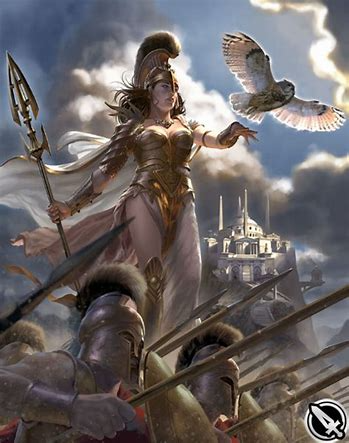

The Minoans are named after King Minos, a legendary figure from Greek mythology. The Minoans were known for their advanced society, which included impressive architecture, sophisticated art, and a complex social structure.
Palace CentersThe Minoans built elaborate palace complexes as their administrative, religious, and economic centers. The most famous of these is the Palace of Knossos, located near modern-day Heraklion.
Art and CultureMinoan art is known for its vibrant frescoes, pottery, and sculptures. The artwork often depicted nature, animals, ceremonies, and religious rituals. The Minoans had a unique writing system called Linear A, but it remains undeciphered
The Minoans were accomplished seafarers and traders, engaging in extensive trade networks across the Mediterranean. They traded goods such as pottery, metalwork, olive oil, and luxury items with other ancient civilizations.
 Religion and SocietyThe Minoans had a polytheistic religion with a focus on nature and fertility. They worshipped various deities, including a mother goddess, often depicted with symbols of fertility and regeneration. The society was likely matriarchal, and women played significant roles in religious and economic activities.